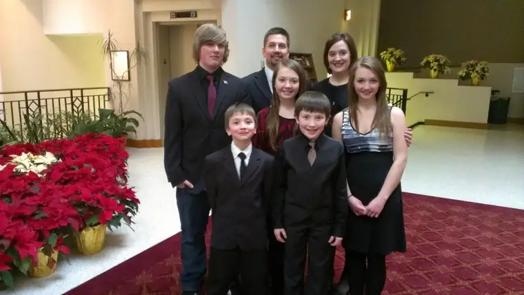
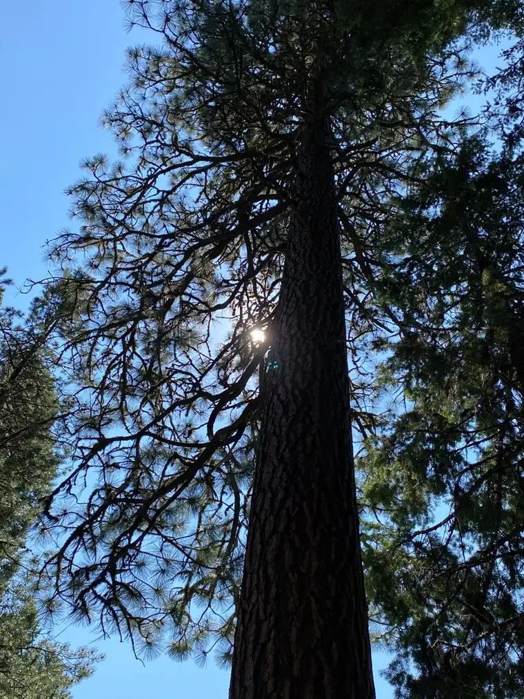
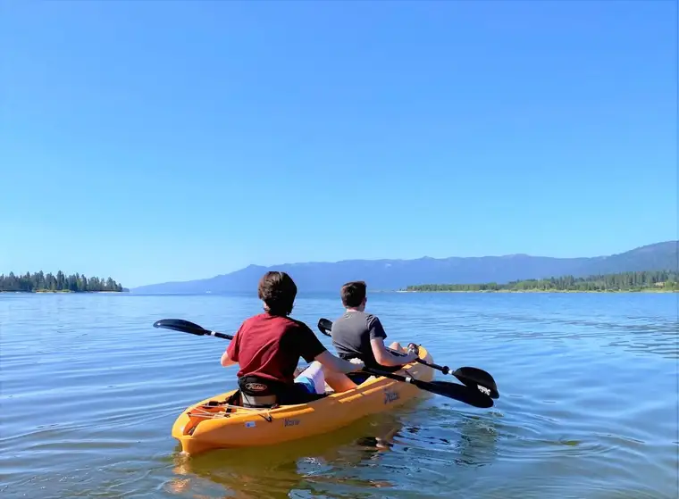
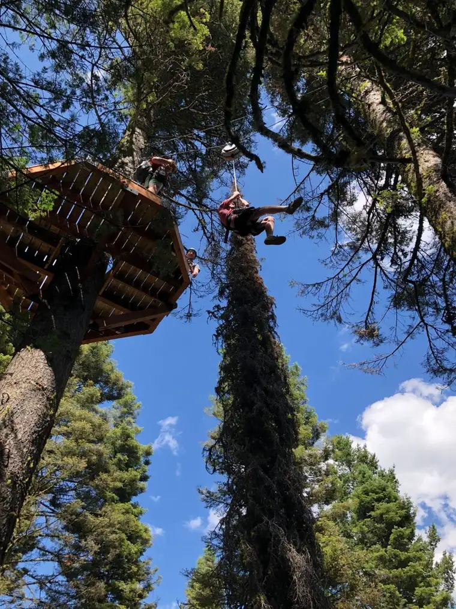
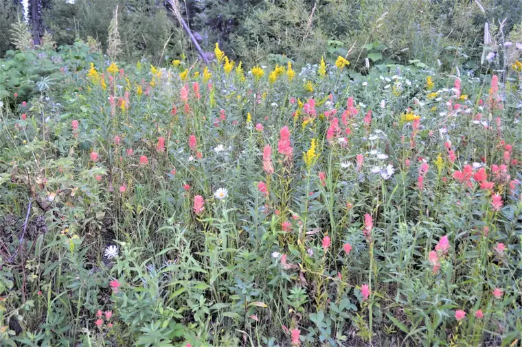

It was our first road trip since the pandemic began, and just a month shy of what would have been my father’s 85th birthday. We were traveling to Bismarck, N.D., to see my mother for the first time in six months.
Maybe it was the exhilaration of finally being out of town and enjoying the rising, golden wheat fields along the interstate that caught me off guard. Maybe it was the distraction of the hens and drakes paddling peacefully in the nearby glistening lakes and ponds that caused me to be unprepared.
All it took, really, was a simple glance over to his spot in the passenger’s seat to set my tears flowing. My sunglasses securely affixed, I hoped he wouldn’t notice. No need to worry him over this sudden onslaught of the soul.
It had come on fiercely, though, just by noticing that the little boy who had followed me like a puppy at age 4 when his four siblings were off to school was no longer a boy at all.
It was his legs, to be exact, the long, slender, new-to-me limbs of a man almost unrecognizable, that made me think of my father. He left this world earlier than we’d expected, just seven years ago. But seven years in the life of a child is a lot, and a lot of growth happens in that span of time.
My father, the youngest son of nine children, had grown up in a testosterone-heavy family. Along with the five boys, there were four girls. Dad, while surrounded on either side by sisters, had known well the rugged reality of brotherhood.
I always felt badly Dad never had a son himself, and was glad to be the sister who brought him his first grandson. Along with my sister’s only son, together we introduced four grandsons to Dad, and four granddaughters. Dad cherished each one.

But it hit me on that ride West — and now as I type these words — that while Dad got to know his grandkids in the measure allowed, he didn’t have a chance to know them now; not in this way, on this earth. As much as I know he enjoyed having grandsons after not fathering any sons, the raw truth was that he wasn’t here to hang out with these boys who were quickly, breathtakingly, growing into men.

That reality provoked my quiet gushing of tears, all because of a glance at those long, manly legs. And soon in my pondering, I realized that not only was Dad missing out on this beautiful phase of our parenting, but our kids, all of them, were missing out on him, too. Yes, they had known Grandpa Bob, but, had we had more time with him, they could have appreciated him so much more, and he, them. Dad was limited in his last years, and they didn’t really get to know him to the full.

Along with the sadness of the surprise of grief on our car ride through the hills of North Dakota, I also felt glad to be thinking of Dad, and, because of my faith, to sense he is somehow aware of all our children, as they are now, and beamining with us over how far they’ve come.

Just a month later, on Dad’s Aug. 4 birthday, my husband and I were in Idaho with our two youngest sons, those now-mostly-men. As we kayaked on Lake Cascade, drove through gorgeous mountain ranges along the Payette River and ziplined through the forest at Tamarack Ski Resort, I knew somehow that Dad knew of our peace, our joy, our togetherness, and that it was a gift to him in his new home, and in his heart.



Nevertheless, I would have given anything to have him there with us, to clear away a spot on the rocks the night we made S’mores, felt ourselves nourished by the babbling brook nestled just beyond the grove of trees, or savored the songs of the melodious mountain birds — a species he so loved.

Miss you, Dad. I know you would have enjoyed these boys as much as we are enjoying them. I love you…Always, “Rock”
Q4U: When were you surprised by grief?